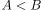
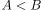
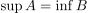

Dedekindsche Schnittaxiom
1. Definition
Sei  eine totalgeordnete Menge.
Dann erfüllt
eine totalgeordnete Menge.
Dann erfüllt  das Schnittaxiom, falls für eine Partition mit  (siehe: Vergleich von Mengen) ein
Falls für das Supremum und Infimum, welche jeweils Existieren, gilt:
das Schnittaxiom, falls für eine Partition mit  (siehe: Vergleich von Mengen) ein
Falls für das Supremum und Infimum, welche jeweils Existieren, gilt:

1